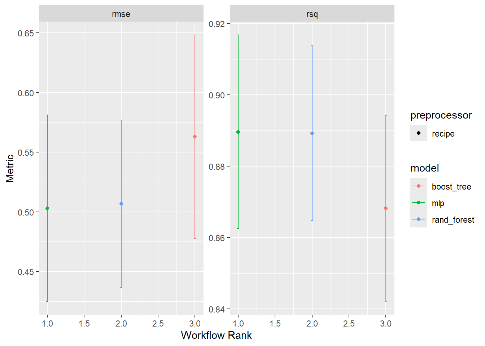
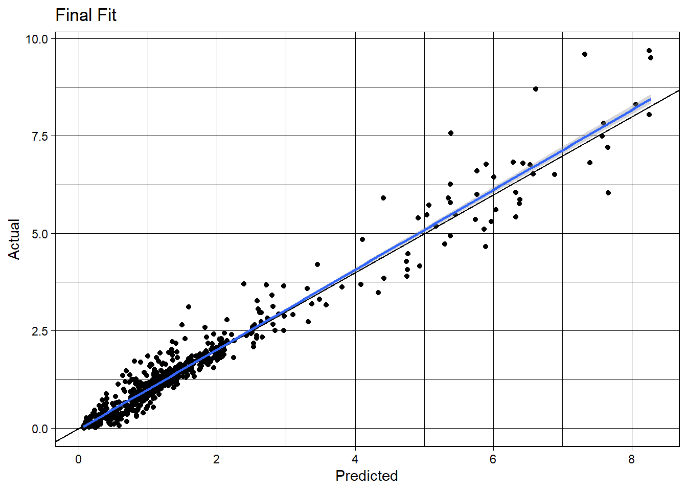

── Conflicts ────────────────────────────────────────── tidyverse_conflicts() ──
✖ dplyr::filter() masks stats::filter()
✖ dplyr::lag() masks stats::lag()
ℹ Use the conflicted package (<http://conflicted.r-lib.org/>) to force all conflicts to become errors
library(tidymodels)
Warning: package 'tidymodels' was built under R version 4.4.3
p_mean aridity q_mean gauge_lat
Min. :0.6446 Min. :0.2203 Min. :0.004553 Min. :27.05
1st Qu.:2.3725 1st Qu.:0.6957 1st Qu.:0.632918 1st Qu.:35.69
Median :3.2288 Median :0.8562 Median :1.131818 Median :39.26
Mean :3.2569 Mean :1.0570 Mean :1.493967 Mean :39.25
3rd Qu.:3.7833 3rd Qu.:1.2687 3rd Qu.:1.750901 3rd Qu.:43.23
Max. :8.9369 Max. :5.2079 Max. :9.688438 Max. :48.82
gauge_lon
Min. :-124.39
1st Qu.:-110.41
Median : -92.84
Mean : -95.81
3rd Qu.: -81.76
Max. : -67.94
train & test & recipe
#train and test splitset.seed(1001)split <-initial_split(camels, prop =0.8)camels_train <-training(split)camels_test <-testing(split)camels_folds <-vfold_cv(camels_train, v =10)#reciperec <-recipe(q_mean ~ ., data = camels_train) |>step_rm(gauge_lat, gauge_lon) |>step_unknown(all_nominal_predictors()) |>step_dummy(all_nominal()) |>step_scale(all_numeric_predictors()) |>step_center(all_numeric_predictors())
Warning: package 'xgboost' was built under R version 4.4.3
Warning: package 'nnet' was built under R version 4.4.3
Warning: package 'ranger' was built under R version 4.4.3
autoplot(wf)

The model that I think best performs is random forest model because it has the most consistent values in the autoplot. I chose the Random Forest model. The model engine is a ranger, and the mode is regression. I think that it is performing well for this problem because of what I see in the autoplot. In rmse and rsq, the values show that this model would be better based on the fact that the values are higher than boost_tree and mlp.
Model Tuning
library(bonsai)
Warning: package 'bonsai' was built under R version 4.4.3
full_pred =fit(finalize, data = camels) |>augment(new_data = camels) full_pred <- full_pred %>%mutate(sq_residuals = (.pred - q_mean)^2)ggplot(full_pred, aes(x = .pred, y = q_mean)) +geom_point() +geom_abline() +geom_smooth(method ="lm") +theme_linedraw() +labs(title ="Final Fit", x ="Predicted", y ="Actual")
`geom_smooth()` using formula = 'y ~ x'

Bulding a Map
final <-fit(finalize, data = camels) %>%augment(new_data = camels) %>%mutate(residual = .pred - q_mean,squared_residual = (.pred - q_mean)^2)
-> Building the actual maps
map1 <-ggplot(data = full_pred, aes(x = gauge_lon, y = gauge_lat)) +borders("state", colour ="gray50") +geom_point(aes(color = .pred)) +scale_color_gradient(low ="pink", high ="dodgerblue") + ggthemes::theme_map()+labs(title ="Camel Gauge Locations based on q_mean Predictions",x ="Longitude",y ="Latitude",color ="predictions" )
map2 <-ggplot(data = full_pred, aes(x = q_mean, y = .pred)) +borders("state", colour ="gray50") +geom_point(aes(color = residuals)) +scale_color_gradient(low ="pink", high ="dodgerblue") + ggthemes::theme_map()+labs(title ="Camel Gauge Locations based on residual",x ="Longitude",y ="Latitude",color ="residuals")
#combined <- map1 + map2#print(combined)
#my maps have the right code (checked by jaque in class) but are not running. I am making a note that I did get maps at one point, but I changed nothing and tried to re-run R and then it stopped working